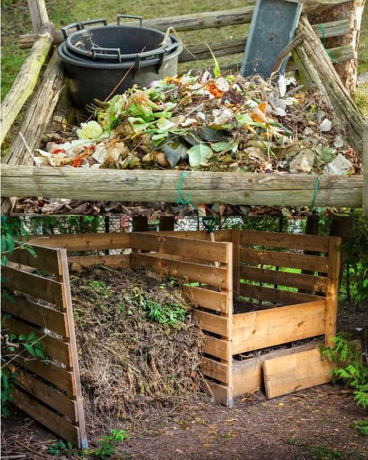
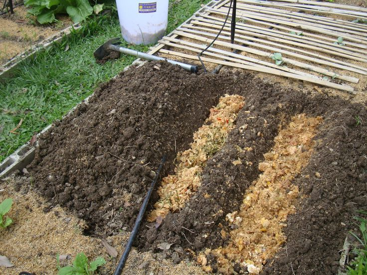
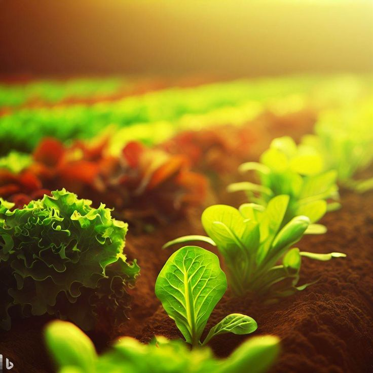
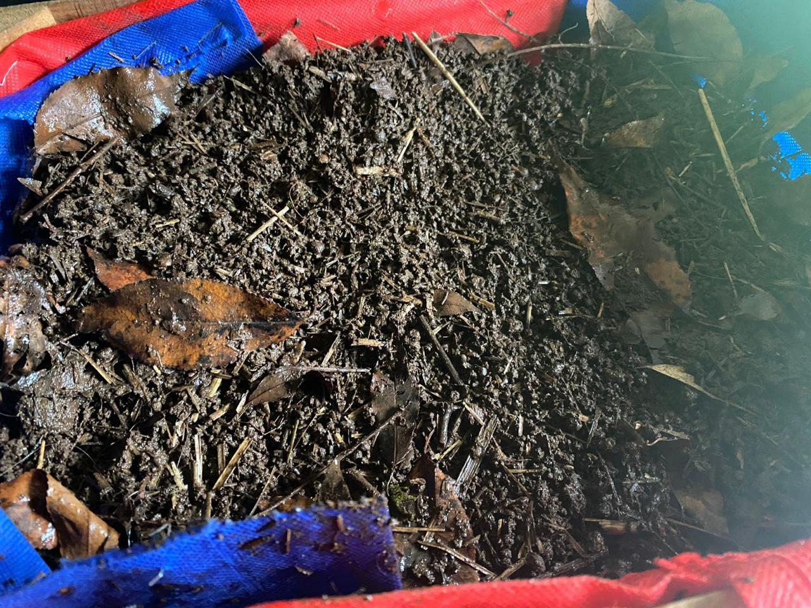
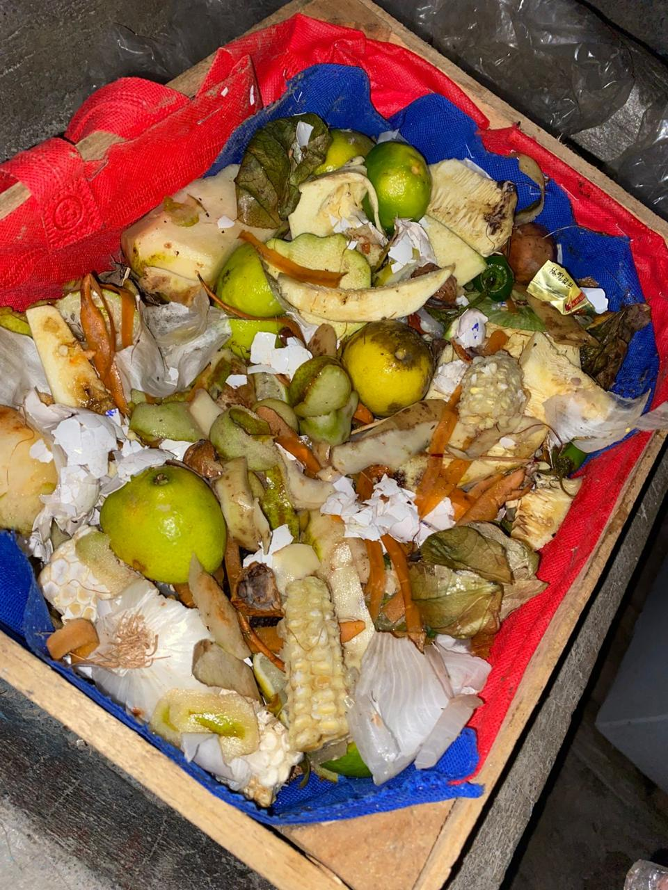
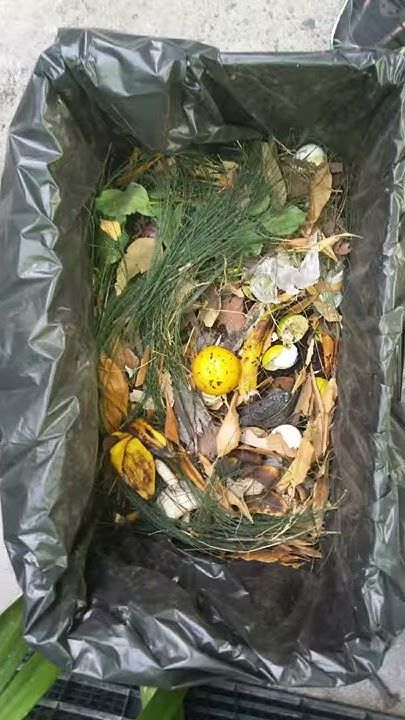
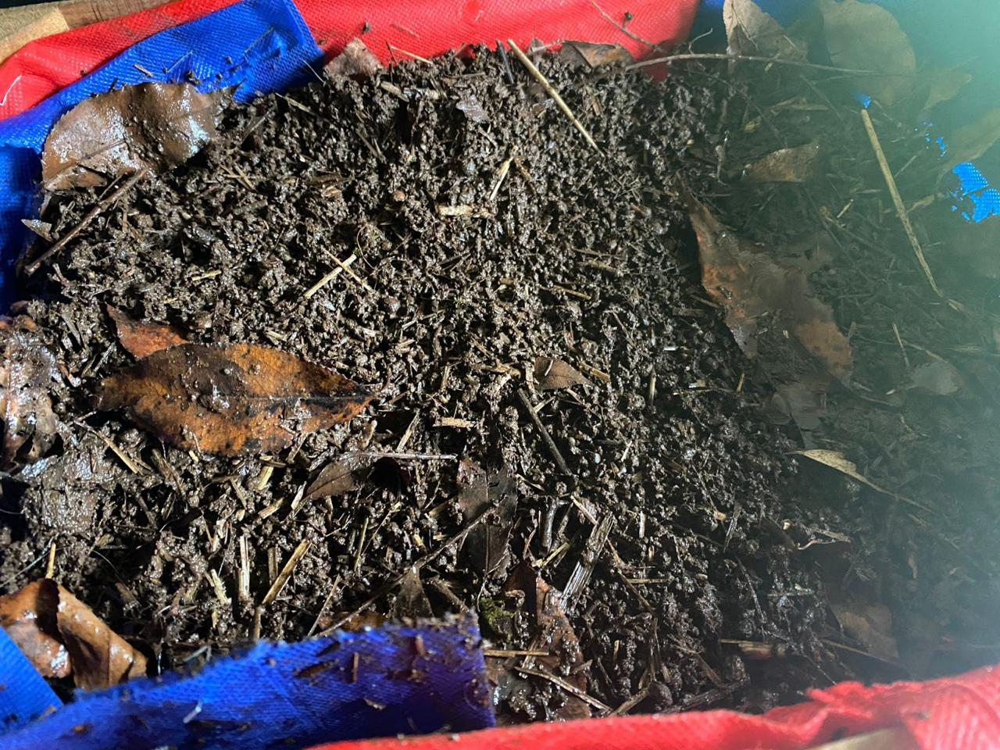
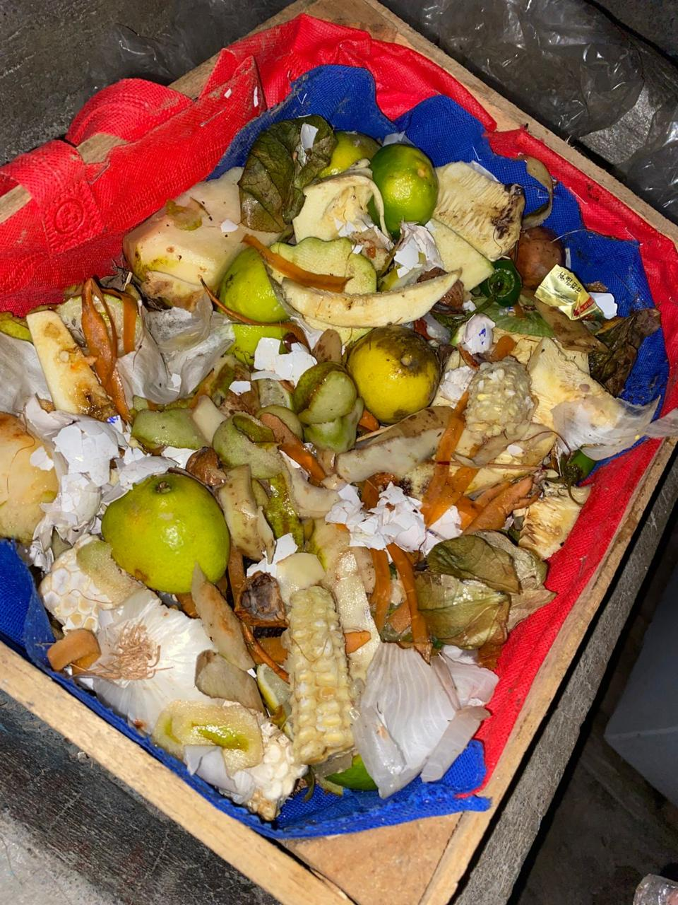
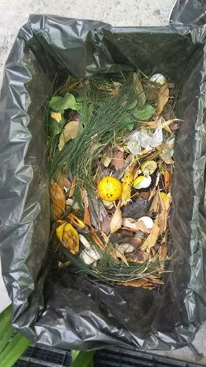

¿Qué es la composta?
La composta es un proceso natural de descomposición de residuos orgánicos que genera un fertilizante natural ideal para la agricultura y jardinería. Reduce basura, mejora el suelo y apoya al medio ambiente.



La composta es un proceso natural de descomposición de residuos orgánicos que genera un fertilizante natural ideal para la agricultura y jardinería. Reduce basura, mejora el suelo y apoya al medio ambiente.
| Beneficio | Descripción | Imagen |
|---|---|---|
| Reduce residuos | Disminuye la cantidad de basura en casa. |  |
| Enriquece el suelo | Mejora la calidad del suelo con nutrientes naturales. |  |
| Ecoamigable | Contribuye al cuidado del medio ambiente y reduce gases contaminantes. | |
| Ahorro económico | Evita comprar fertilizantes químicos costosos. |  |
Puedes utilizar la composta en macetas, jardines, huertos urbanos o en cultivos más grandes. Solo esparce una capa sobre la tierra y mézclala ligeramente. Es ideal para plantas, flores, árboles frutales y hortalizas.
Fina – Ideal para macetas ($50)
Gruesa – Perfecta para huertos ($60)
Mixta – Todo uso ($45)
Composta casera 100% orgánica lista para usar en huertos, jardines o macetas.
Te enseñamos cómo iniciar tu composta en casa o cómo aprovechar la que ya compraste.

Incluyen composta + semillas + macetas biodegradables para empezar tu huerto urbano.

Enviamos tu pedido directo a tu casa en Donato Guerra y alrededores.

 






Depende del tipo de planta, pero una vez al mes es suficiente en la mayoría de los casos.
No contamina, es más económico y mejora el suelo de forma sostenible.
Sí, es perfecta para macetas en casa o en oficina.